അഞ്ച് തൂണുകൾ, സന്തുലനത്തിലേക്ക് നാല്പത്തഞ്ച് വഴികൾ
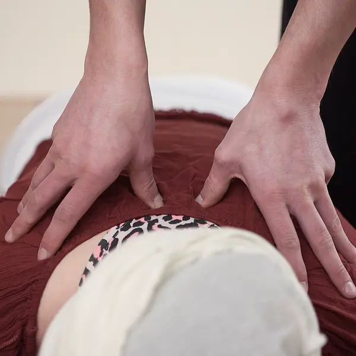
അക്യുപ്രഷർ
വിരലുകളും തള്ളവിരലും കൈപ്പത്തിയും കൊണ്ട് ശരീരത്തിലെ പ്രത്യേക ബിന്ദുക്കളിൽ അമർത്തുന്ന പരമ്പരാഗത ചികിത്സ.

അക്യുപങ്ചർ
അതിസൂക്ഷ്മവും അണുവിമുക്തവുമായ സൂചികൾ ശരീരബിന്ദുക്കളിൽ വയ്ക്കുന്നു.

അരോമ തെറാപ്പി
സസ്യങ്ങൾ, പൂക്കൾ, ഔഷധങ്ങൾ എന്നിവയിൽനിന്നുള്ള ശുദ്ധ സുഗന്ധതൈലങ്ങൾ മസാജ്, ശ്വസനം, വ്യാപനം എന്നിവയിലൂടെ ഉപയോഗിക്കുന്നു.

ബാച്ച് ഫ്ലവർ തെറാപ്പി
ഡോ. എഡ്വേർഡ് ബാച്ച് കണ്ടെത്തിയ, വികാരങ്ങൾക്കുള്ള സൗമ്യമായ പുഷ്പസത്തുകൾ.
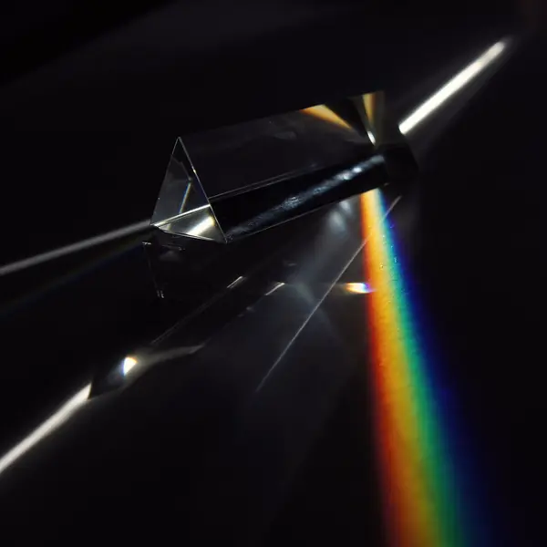
കളർ തെറാപ്പി
ഓരോ നിറത്തിനും സ്വന്തം ഊർജ്ജവും സ്പന്ദനവുമുണ്ട്.

കോസ്മെറ്റോളജി & ട്രൈക്കോളജി
ചർമ്മത്തിനും മുഖത്തിനും സൗന്ദര്യത്തിനുമൊപ്പം മുടിക്കും ശിരോചർമ്മത്തിനും പരിചരണം.

കപ്പിംഗ് തെറാപ്പി
പ്രത്യേക കപ്പുകൾ ചർമ്മത്തിൽ സൗമ്യമായ വലിവ് സൃഷ്ടിക്കുന്നു.

ഡോൺ തെറാപ്പി
നട്ടെല്ലിനും സന്ധികൾക്കുമുള്ള സൗമ്യമായ കൈചികിത്സ.

ഇലക്ട്രോ ഫിസിയോ തെറാപ്പി
സുരക്ഷിതമായ വൈദ്യുതതരംഗങ്ങൾ നാഡികളെയും പേശികളെയും ഉത്തേജിപ്പിക്കുന്നു.

വ്യായാമ ചികിത്സ
നിങ്ങളുടെ പ്രായത്തിനും ശരീരത്തിനും അവസ്ഥയ്ക്കും യോജിച്ച വ്യായാമങ്ങൾ.

ആഹാരചികിത്സ
ആഹാരം തന്നെ ഔഷധം.

ഗുവാഷ തെറാപ്പി
മിനുസമുള്ള ഉപകരണം കൊണ്ട് ചർമ്മത്തിൽ സൗമ്യമായി ഉരയ്ക്കുന്ന ചൈനീസ് പാരമ്പര്യം.

ഹിജാമ തെറാപ്പി
തിരഞ്ഞെടുത്ത ബിന്ദുക്കളിൽ ചെയ്യുന്ന പ്രവാചക സുന്നത്തായ വെറ്റ് കപ്പിംഗ്.
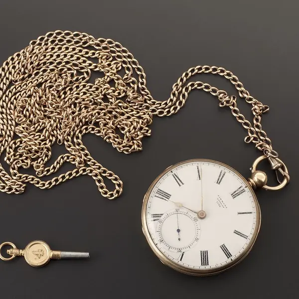
ഹിപ്നോസിസ് തെറാപ്പി
ആഴത്തിലുള്ള വിശ്രാന്തിയും ഏകാഗ്രതയുമുള്ള അവസ്ഥയിലേക്കുള്ള വഴികാട്ടൽ.

IASTM തെറാപ്പി
ഉപകരണ സഹായത്തോടെയുള്ള മൃദുകല ചികിത്സ.

മാഗ്നറ്റ് തെറാപ്പി
സന്തുലനത്തിനായി ശരീരത്തിൽ കാന്തങ്ങൾ വയ്ക്കുന്ന പരമ്പരാഗത രീതി.
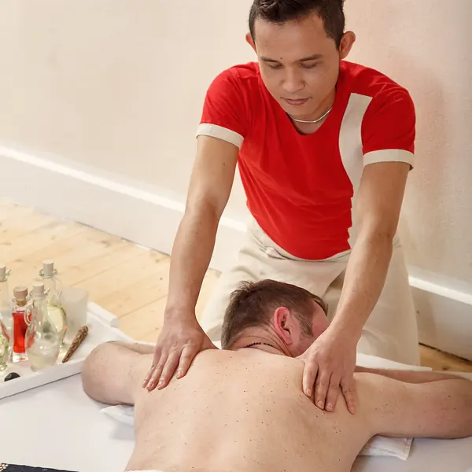
മർമ്മ അക്യു തെറാപ്പി
107 മർമ്മങ്ങളുടെ പ്രാചീന ഭാരതീയ ചികിത്സ.

മസാജ് തെറാപ്പി
കൈകൾ കൊണ്ട് പേശികൾ അമർത്തി, തടവി, ഉഴിയുന്നു.

നാഭി ചികിത്സ
ശരീരകേന്ദ്രമായ നാഭിക്കു ചുറ്റും ഇളംചൂടുള്ള ഔഷധ എണ്ണ പുരട്ടുന്നു.
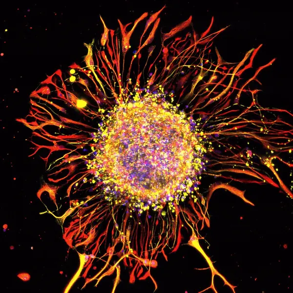
ന്യൂറോ തെറാപ്പി
നാഡികളിലും നാഡീബിന്ദുക്കളിലും സൗമ്യമായ അമർത്തൽ.

ഓസ്റ്റിയോപ്പതി മാനിപ്പുലേറ്റീവ് തെറാപ്പി
പേശികൾ, സന്ധികൾ, നട്ടെല്ല് എന്നിവയിൽ സൗമ്യമായ കൈചികിത്സ.

ഫിസിക്കൽ തെറാപ്പി
വ്യായാമം, ചലനം, കൈചികിത്സ എന്നിവയിലൂടെ കരുത്ത് വീണ്ടെടുക്കുന്നു.

ഫിസിയോതെറാപ്പി
ചലനം, വ്യായാമം, മസാജ്, പ്രത്യേക ഉപകരണങ്ങൾ എന്നിവയിലൂടെ പ്രവർത്തനശേഷി വീണ്ടെടുക്കുന്നു.
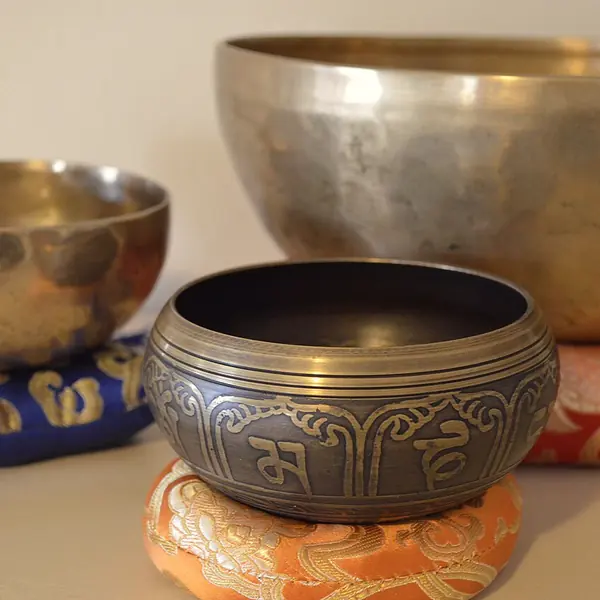
സൗണ്ട് തെറാപ്പി
ആശ്വാസമേകുന്ന ശബ്ദങ്ങളും സ്പന്ദനങ്ങളും സംഗീതവും മനസ്സിനെ ശാന്തമാക്കുന്നു.

വർമ്മ അക്യു തെറാപ്പി
വർമ്മം എന്ന ജീവബിന്ദുക്കളുടെ തമിഴ് ചികിത്സാപാരമ്പര്യം.

യോഗ & ധ്യാന ചികിത്സ
ആസനം, ശ്വാസം, ധ്യാനം എന്നിവ ഒരുമിച്ച്.

സൗന്ദര്യ പരിചരണം
ചർമ്മം, മുടി, മുഖം എന്നിവയ്ക്ക് ഔഷധ, പ്രകൃതിദത്ത രീതികൾ.
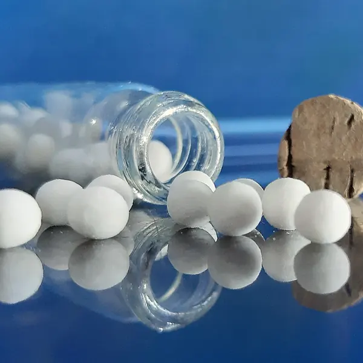
ബയോകെമിക്
ജർമ്മനിയിൽ ഡോ. ഷൂസ്ലർ തുടങ്ങിയ, പന്ത്രണ്ട് സെൽ സാൾട്ടുകളുടെ ലളിതമായ ഗുളിക രീതി.

അസ്ഥിക്രമീകരണം
കെട്ടുവൈദ്യം എന്നറിയപ്പെടുന്ന, അസ്ഥി, സന്ധി, പേശികൾക്കുള്ള പരമ്പരാഗത കൈവിദ്യ.

ചക്ര ധ്യാനം
മനസ്സും ശ്വാസവും ശ്രദ്ധയും ഏഴ് ഊർജ്ജകേന്ദ്രങ്ങളിൽ ഓരോന്നായി വിശ്രമിക്കുന്നു.

കൈറോപ്രാക്റ്റിക്
നട്ടെല്ലിനും സന്ധികൾക്കും വൈദഗ്ധ്യമുള്ള കൈ അഡ്ജസ്റ്റ്മെന്റുകൾ.

ക്രിസ്റ്റൽ ഹീലിംഗ്
ഓരോ ഊർജ്ജകേന്ദ്രത്തിലും പ്രകൃതിദത്ത ക്രിസ്റ്റലുകളും കല്ലുകളും വയ്ക്കുന്നു.
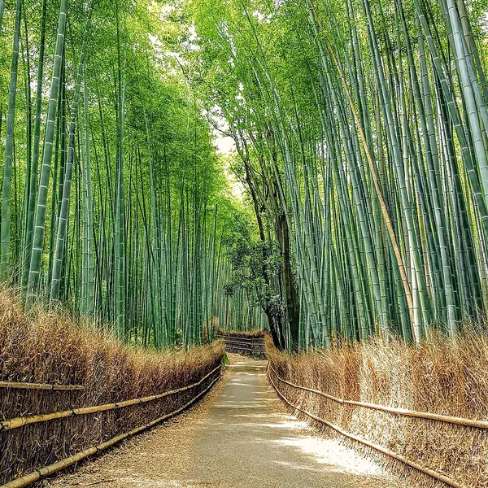
ഫെങ് ഷൂയി
കാറ്റും വെള്ളവും: ക്രമീകരണത്തിന്റെ ചൈനീസ് കല.

ഔഷധസസ്യ ചികിത്സ
ഇല, വേര്, വിത്ത്, പൂവ്, തൊലി എന്നിവ ചാറ്, പൊടി, കഷായം, എണ്ണ, ലേപം എന്നിങ്ങനെ ഒരുക്കുന്നു.
ജ്യോതിഷ ശാസ്ത്രം
നിങ്ങളുടെ ജാതകത്തിലൂടെ വായിക്കുന്ന ഭാരതീയ പ്രകാശശാസ്ത്രം.
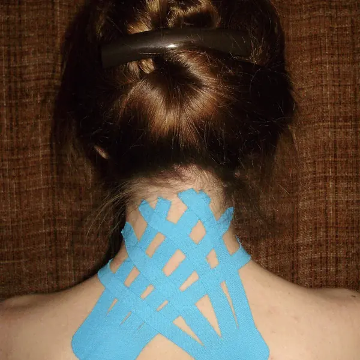
കിനേഷ്യോളജി ടേപ്പിംഗ്
ചലിക്കുമ്പോൾ പേശികളെയും സന്ധികളെയും താങ്ങുന്ന ഇലാസ്റ്റിക് കോട്ടൺ ടേപ്പ്.

നാഡീവിജ്ഞാനം
മൂന്ന് വിരലുകൾ കൈത്തണ്ടയിലെ നാഡി വായിക്കുന്നു.

പ്രകൃതിചികിത്സ
ഭൂമി, ജലം, വായു, അഗ്നി, ആകാശം ശരീരത്തിന്റെ സ്വയംശക്തിയെ തുണയ്ക്കുന്നു.

പഞ്ചകർമ്മം
ആഴത്തിലുള്ള ശുദ്ധീകരണത്തിനും പുതുക്കലിനുമുള്ള ആയുർവേദത്തിലെ അഞ്ച് കർമ്മങ്ങൾ.
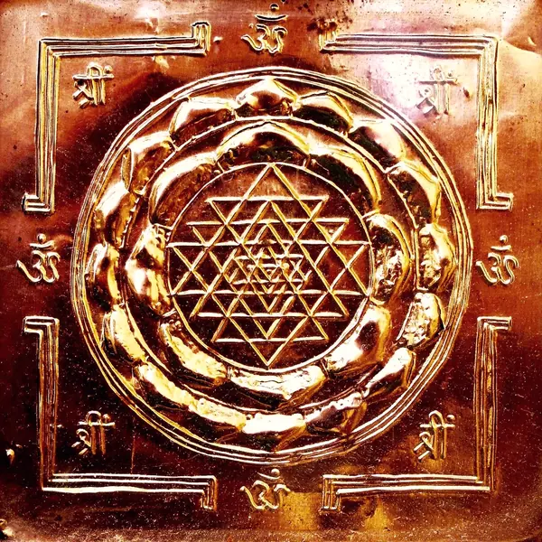
പൈറ വാസ്തു
കെട്ടിടത്തെ ഇണക്കമുള്ളതാക്കാൻ പിരമിഡ് യന്ത്രങ്ങൾ സ്ഥാപിക്കുന്നു.

പിരമിഡ്
നിശ്ചലതയുടെ ഏറ്റവും പഴയ രൂപങ്ങളിലൊന്ന്.

റെയ്കി ഹീലിംഗ്
മികാവോ ഉസുയി തുടങ്ങിയ ശാന്തമായ ജാപ്പനീസ് രീതി.

റിഫ്ലെക്സോളജി
പാദം, കൈ, ചെവി എന്നിവയിലെ റിഫ്ലെക്സ് ബിന്ദുക്കൾ അമർത്തി ഉഴിയുന്നു.
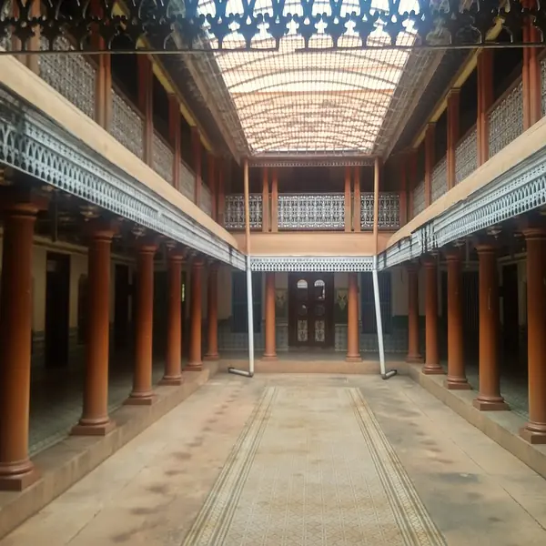
വാസ്തുശാസ്ത്രം
പ്രകൃതിയോടിണങ്ങി പണിത് ജീവിക്കാനുള്ള ഭാരതീയ കല.

ഇലക്ട്രോ ഹോമിയോപ്പതി
സസ്യാധിഷ്ഠിതമായ സൗമ്യ ഔഷധരീതി.
യോജിക്കുന്ന ചികിത്സയില്ല. മറ്റൊരു വാക്ക് ശ്രമിക്കൂ.
ഈ സൈറ്റിലെ വിവരങ്ങൾ പൊതുവായ ആരോഗ്യ അവബോധത്തിനുള്ളതാണ്. ഇത് രോഗനിർണ്ണയമോ രോഗം മാറുമെന്ന വാഗ്ദാനമോ അല്ല, വൈദ്യോപദേശത്തിന് പകരവുമല്ല. നിർദ്ദേശിക്കപ്പെട്ട ചികിത്സ തുടരുകയും യോഗ്യതയുള്ള ഡോക്ടറെ സമീപിക്കുകയും ചെയ്യുക. ഞങ്ങളുടെ സേവനങ്ങൾ യോഗ്യതയ്ക്കും നിയമപരിധിക്കും ഉള്ളിലാണ് നൽകുന്നത്.